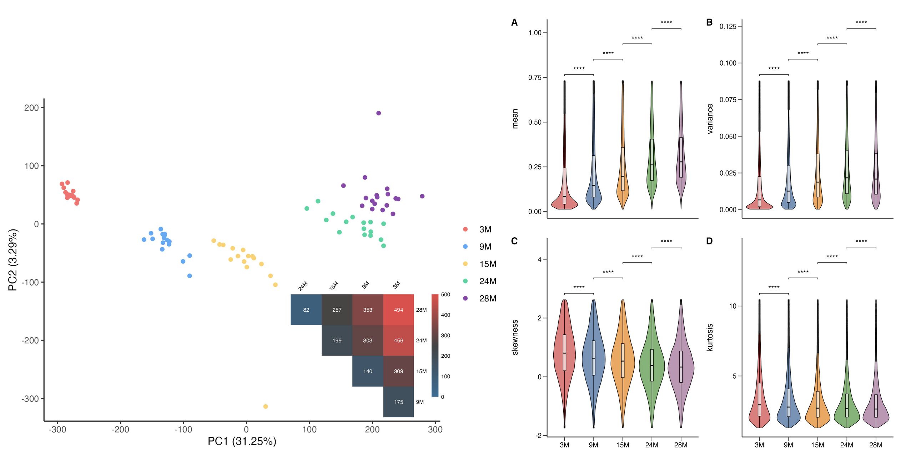
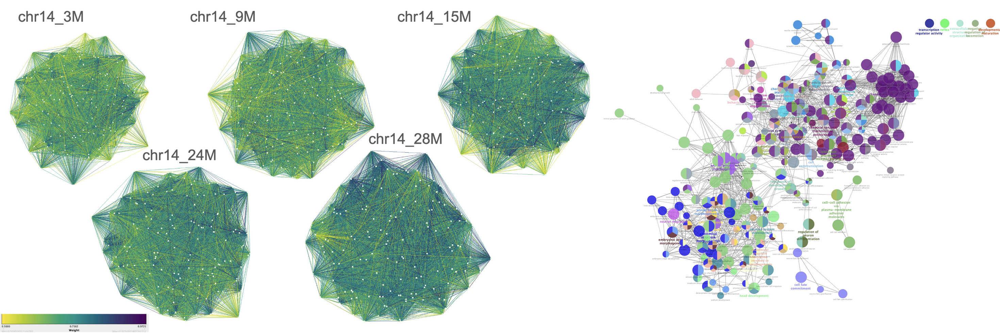
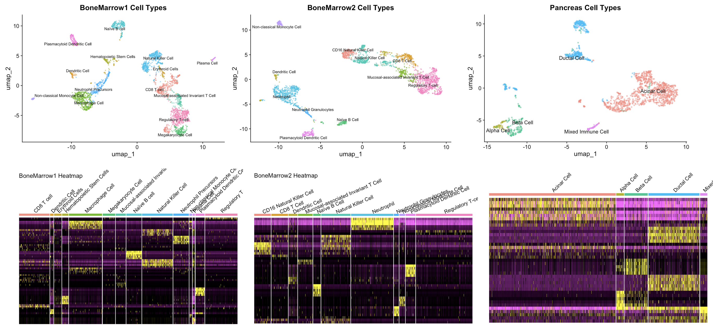
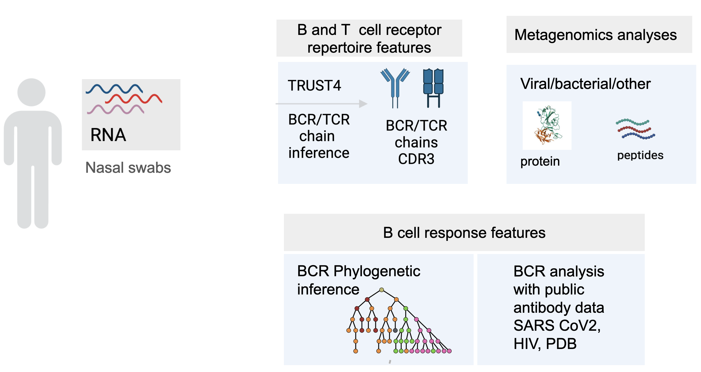
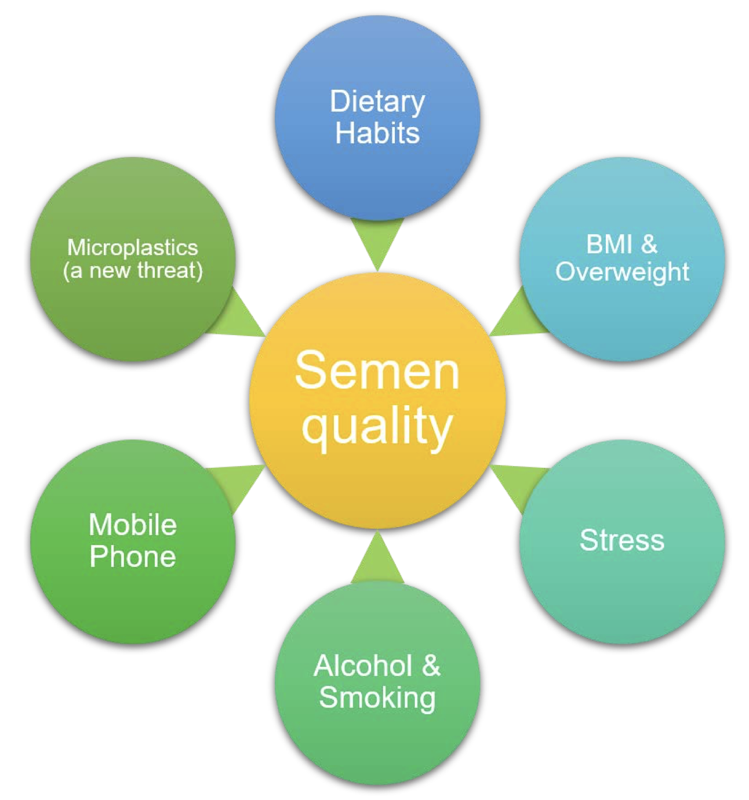
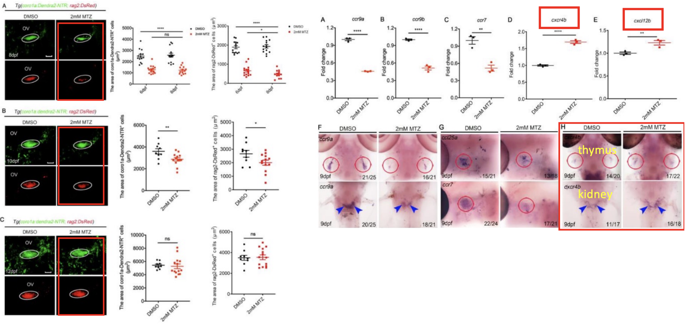

Research
2024 – Current
Influenza Vaccination Impact on DNA Methylation in UGA6 Cohort
Supervised by Dr. Matteo Pellegrini in his Lab
- Influenza vaccination, a key preventive measure against annually recurring pandemics, elicits immune responses potentially regulated by DNA methylation. Prior studies within University of Georgia cohorts (UGA3, 4, and 5) have highlighted the role of DNA methylation in modulating the RIG‐I signaling pathway and T cell innate antiviral pathways. This study validates these findings in the larger UGA6 cohort (n = 254) to identify epigenetic factors influencing immune responses to influenza vaccination. Multivariate prediction model with leave-one-out cross-validation (LOOCV) were used to model associations between DNA methylation profiles and sero-protection levels at day 0 and day 28, as well as sero-conversion at day 28. Significant CpG sites were mapped to genes and pathways through gene set enrichment analysis, identifying the RIG‐I signaling pathway as the key regulator of vaccine-induced immunity. Parallel prediction models for RNA-seq and cytokine datasets further elucidated molecular mechanisms. Additionally, genome-wide expression quantitative trait loci (eQTL) analyses linked DNA methylation to gene expression, and correlations between DNA methylation and cytokine data highlighted additional regulatory insights. Our study provides a comprehensive understanding of the epigenetic regulation of immune responses to influenza vaccines and identifies potential therapeutic targets in a large cohort setting, contributing to advancements in precision medicine for influenza vaccination.

Nonlinear Aging Dynamics in Co-methylation Network
Graduate Student Researcher | Supervised by Dr. Feng Gao
- Non-linear epigenetic models have emerged as critical regulators of aging, with recent findings highlighting their predominant influence on nervous system genes and bivalently marked chromatin regions, in contrast to well-established linear models like Horvath’s aging clock. This study investigates the role of non-linear methylation dynamics in aging mice colon tissue and their associations with gene expression and pathways. Using metilene, we identified differentially methylated regions (DMRs) across five age groups and constructed graph-based networks with NetworkX, uncovering non-linear co-methylation clusters at chromosomal, individual, and age-group levels. Functional associations were explored with Cytoscape, mapping genes to biological processes, cellular components, pathways, and human orthologs. Gene set enrichment analysis revealed dynamic changes in gene functional groups during aging, consistent with non-linear methylation patterns. These findings enhance our understanding of the epigenetic mechanisms driving aging and highlight the significance of non-linear dynamics in age-related biological processes.
 
Single-Cell RNA-Seq for Cell Type Annotation
Supervised by Dr. Jingyi Jessica Li
- Utilized single-cell RNA sequencing (scRNA-seq) data to characterize cellular heterogeneity in human bone marrow (BoneMarrow1 and BoneMarrow2) and pancreas samples. Preprocessing, dimensionality reduction, clustering, and biomarker identification were conducted using the Seurat package, leading to the identification and annotation of 14, 11, and 5 distinct cell types, respectively. Heatmaps were generated to visualize marker gene expression across clusters, providing insights into cell-specific functions.

Inferring Immune Histories from SARS-CoV-2 RNA-Seq Data
Warren Alpert Fellow | Supervised by Dr. Vanessa D Jonsson
- Understanding immune memory and response to SARS-CoV-2 infection is essential for advancing COVID-19 treatment, personalized treatment and vaccine strategies. This study employs SARS-CoV-2 RNA-seq data from nasal swabs to infer immune histories through an integrated analysis pipeline. Immune cell proportions are estimated using CIBERSORT, while metagenomics annotation characterizes microbial protein landscapes. TRUST4 is used to infer TCR and BCR repertoires, with internal tools performing isotype analysis and clustering based on sequence and biochemistry (ESM/other, tcrdist3). BCR phylogenies are reconstructed using Immcantation, and viral epitope binding to HLA is predicted with netMHCpan, incorporating HLA typing via HLA arcasHLA and MHC Hammer. Finally, we compare the immune histories inferred from the RNA-seq data with publicly available SARS-CoV2 antibodies and nanobodies data to validate the pipeline.

2021 – 2023
Statistical Data Analysis for Biology and Biomedicine Research
- Modeling Transcription Factor Diffusion
- Simulated transcription factor (TF) diffusion in the nucleus using Markov Chain Monte Carlo (MCMC) methods, modeling TF movement as a time-homogeneous Markov process. The model quantified transient states (non-specific DNA interactions) and recurrent states (specific binding at regulatory elements).
- Agricultural Multivariate Regression
- Conducted multivariate regression analysis in R to evaluate the relationship between rice yield and irrigation at five critical growth stages (seedling, tillering, panicle initiation, flowering, and grain filling). Identified optimal irrigation strategies to maximize yield while minimizing resource consumption. Incorporated additional variables such as soil type, weather conditions, and nutrient input for a comprehensive analysis.
2020 – 2021
Review: Lifestyle Factors Affecting Semen Quality
- This review examined the impact of dietary habits, BMI, alcohol, smoking, stress, mobile phone usage, and microplastics on sperm parameters. It highlighted that a balanced diet, exercise, and stress management improve semen quality, while smoking, alcohol, and microplastic exposure impair it. Statistical models like multivariate regression and meta-analysis were used to assess fertility impacts, emphasizing the public health importance of addressing these lifestyle factors.

2019 – 2020
Lymphocyte Regeneration after Thymocyte Damage in Zebrafish [presentation slides]
Supervised by Dr. Li Li
Thymus atrophy and T lymphocyte deficiencies are common in aging and following damage caused by factors such as radiation, chemotherapy, or bacterial infections, leading to impaired immune function. Our study investigates the regeneration of T lymphocytes in zebrafish after thymocyte injury, leveraging the transparency and genetic tractability of zebrafish as a model organism. A damage model was constructed by treating Tg(coro1a:Dendra2-NTR) transgenic zebrafish with 2 mM Metronidazole for 12 hours, resulting in significant lymphocyte reduction and apoptosis in the thymus, as confirmed by whole-mount in situ hybridization (WISH) and confocal microscopy.
Through real-time PCR (RT-qPCR), we discovered that the CXCL12/CXCR4 chemokine signaling pathway plays a critical role in the regeneration of thymic lymphocytes. Inhibition of this pathway with WZ811, a CXCL12/CXCR4 receptor antagonist, significantly impaired lymphocyte recovery, suggesting that CXCL12/CXCR4 signaling is essential for lymphocyte regeneration. Additionally, lineage tracing experiments revealed that most regenerating lymphocytes originated from hematopoietic stem cells migrating from the kidney to the thymus. These findings highlight the importance of the CXCL12/CXCR4 pathway in lymphocyte regeneration and offer insights into the mechanisms of immune recovery after thymocyte damage.

Publications
- Ai, J. (2021). Lifestyle does affect semen quality: factor determination in a statistical way. Lecture Notes in Medicine and Life Sciences, 4, 163–171. Read Article
- Ai, J., Pickering, H., Pellegrini, M. et al. Influenza Vaccination: DNA Methylation and Immune Response Mechanisms. Genome Biology. (forthcoming).
- Ai, J., Fan, Y., Gao, F. et al. Nonlinear aging dynamics in co-methylation network. Cell Reports. (forthcoming).